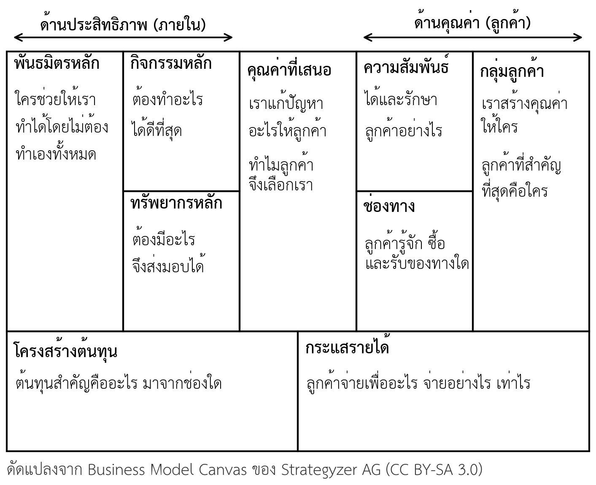
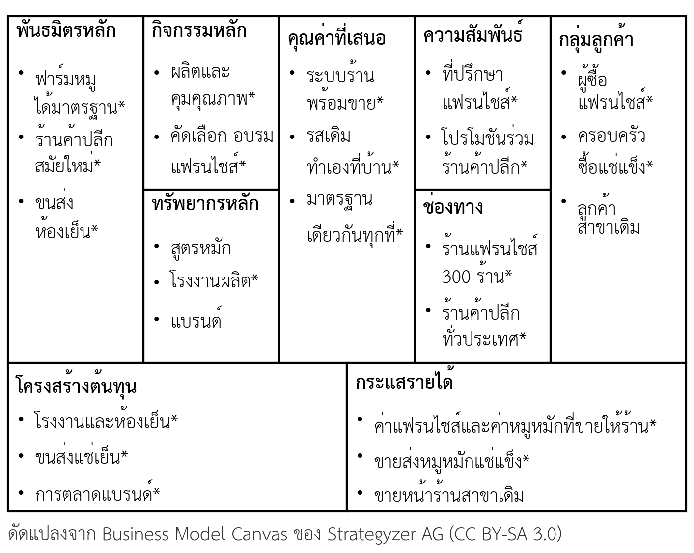
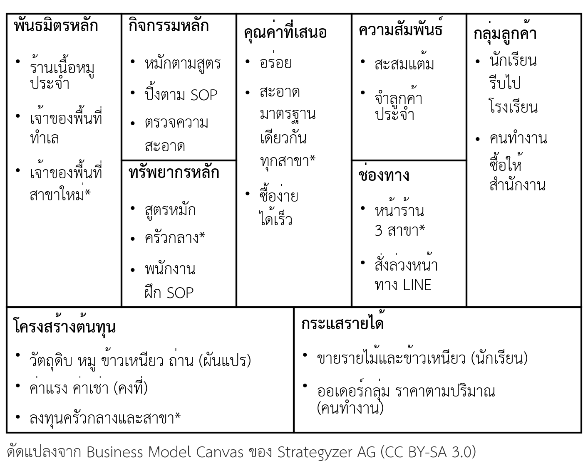

- อธิบายความหมายของโมเดลธุรกิจ และความสัมพันธ์ระหว่างโมเดลธุรกิจกับแผนธุรกิจได้
- ระบุองค์ประกอบทั้งเก้าของ Business Model Canvas และคำถามหลักของแต่ละองค์ประกอบได้
- จำแนกประเภทย่อยภายในแต่ละองค์ประกอบ เช่น ประเภทของกลุ่มลูกค้า องค์ประกอบของคุณค่า และรูปแบบรายได้ได้
- วิเคราะห์ความเชื่อมโยงระหว่างองค์ประกอบ และชี้ช่องที่ไม่เชื่อมกับช่องอื่นได้
- แยกโมเดลธุรกิจปัจจุบันกับโมเดลธุรกิจเป้าหมาย และแยกข้อเท็จจริงกับข้อสมมติบน Canvas ได้
- ระบุว่าแต่ละช่องของ Canvas ต้องขยายเป็นส่วนใดของแผนฉบับเต็ม และต้องใช้หลักฐานและตัวเลขอะไรได้
- อธิบายว่าโมเดลธุรกิจต้องเปลี่ยนอย่างไรเมื่อธุรกิจขยายไปสู่เป้าหมายที่ใหญ่ขึ้นได้
- ใช้ BMC Studio สร้าง Business Model Canvas ฉบับแรกของกลุ่มได้ (ใบงานที่ 2)
ความนำ
ในบทที่ 1 นิสิตได้เขียนข้อความปัญหาและแนวคิดธุรกิจของกลุ่ม แต่แนวคิดที่ดียังไม่ใช่ธุรกิจ ธุรกิจต้องตอบได้ด้วยว่าจะส่งมอบคุณค่านั้นให้ลูกค้าผ่านช่องทางใด จะได้เงินจากใครและอย่างไร ต้องใช้ทรัพยากรและกิจกรรมอะไร และต้นทุนทั้งหมดเท่าไร คำตอบรวมของคำถามเหล่านี้คือโมเดลธุรกิจ ซึ่งเป็นขั้นตอนที่สองของกระบวนการจัดทำแผนธุรกิจ (ภาพที่ 1.1)
บทนี้แนะนำ Business Model Canvas เครื่องมือที่แสดงโมเดลธุรกิจทั้งหมดบนกระดาษแผ่นเดียว เริ่มจากความหมายของโมเดลธุรกิจ โครงสร้างเก้าองค์ประกอบของ Canvas และประเภทย่อยภายในแต่ละองค์ประกอบ จากนั้นจึงเน้นประเด็นที่สำคัญกว่าการรู้จักแต่ละช่อง คือการมอง Canvas เป็นสถาปัตยกรรมที่ทุกช่องเชื่อมกัน และการแยกสิ่งที่เป็นจริงแล้วกับสิ่งที่ยังเป็นข้อสมมติ
สิ่งที่นิสิตต้องจำตลอดบทนี้คือ Canvas เป็นเครื่องมือสรุปภาพรวมและช่วยคิด ไม่ใช่แผนธุรกิจ Canvas บอกได้ว่าธุรกิจมีส่วนประกอบอะไรและเชื่อมกันอย่างไร แต่ไม่บอกว่ามีหลักฐานอะไร ต้องใช้เงินเท่าไร และจะไปถึงเป้าหมายด้วยวิธีใด บทนี้จึงปิดด้วยการชี้ว่าแต่ละช่องต้องขยายเป็นส่วนใดของแผนฉบับเต็ม รูปแบบโมเดลธุรกิจที่ใช้กันแพร่หลาย และการเปลี่ยนของ Canvas เมื่อธุรกิจเดินไปสู่เป้าหมายวันละ 3 ล้านบาท ท้ายบทนิสิตจะใช้ BMC Studio สร้าง Canvas ฉบับแรกของกลุ่ม
2.1 โมเดลธุรกิจคืออะไร
โมเดลธุรกิจ (business model) คือคำอธิบายว่าธุรกิจสร้างคุณค่า ส่งมอบคุณค่า และเก็บคุณค่ากลับมาเป็นรายได้อย่างไร (Osterwalder & Pigneur, 2010) Teece (2010) อธิบายว่าทุกธุรกิจมีโมเดลธุรกิจอยู่แล้ว ไม่ว่าจะเขียนออกมาชัดเจนหรือไม่ก็ตาม และโมเดลธุรกิจคือการออกแบบหรือสถาปัตยกรรมของกลไกการสร้าง การส่งมอบ และการเก็บคุณค่าที่ธุรกิจใช้ คำว่า "สถาปัตยกรรม" นี้สำคัญ เพราะชี้ว่าโมเดลธุรกิจไม่ใช่รายการสิ่งของ แต่เป็นการจัดวางส่วนประกอบให้ทำงานร่วมกัน
ในทางวิชาการ งานทบทวนวรรณกรรมของ Zott และคณะ (2011) พบว่านักวิชาการยังให้นิยามโมเดลธุรกิจไม่ตรงกัน แต่มีแนวคิดร่วมกันหลายประการ เช่น การมองธุรกิจทั้งระบบแทนการมองทีละส่วน และการให้ความสำคัญทั้งกับการสร้างคุณค่าและการเก็บคุณค่า รายวิชานี้ใช้นิยามของ Osterwalder และ Pigneur (2010) เพราะแปลงเป็นเครื่องมือปฏิบัติได้โดยตรง
โมเดลธุรกิจกับแผนธุรกิจสัมพันธ์กันแต่ไม่ใช่สิ่งเดียวกัน โมเดลธุรกิจตอบว่าธุรกิจ "ทำงานอย่างไร" ในภาพรวม ส่วนแผนธุรกิจขยายแต่ละส่วนของโมเดลให้มีรายละเอียด หลักฐาน และตัวเลข เช่น ช่องกลุ่มลูกค้าบน Canvas อาจมีเพียงหนึ่งบรรทัด แต่ในแผนธุรกิจจะกลายเป็นการวิเคราะห์ลูกค้าและขนาดตลาดหลายหน้า Canvas จึงเป็นเครื่องมือสรุปภาพรวมและช่วยคิด แต่ไม่ใช่แผน ถ้าไม่มีแผนฉบับเต็มที่ดีพอ Canvas ที่ดีเพียงใดก็ไม่ช่วยให้ธุรกิจรอด (หัวข้อ 2.7)
2.2 โครงสร้างของ Business Model Canvas
Business Model Canvas (BMC) แบ่งโมเดลธุรกิจเป็นเก้าองค์ประกอบ วางบนแผ่นเดียว (Osterwalder & Pigneur, 2010) ด้านขวาของ Canvas เป็นเรื่องของคุณค่าและลูกค้า ได้แก่ กลุ่มลูกค้า คุณค่าที่เสนอ ช่องทาง ความสัมพันธ์กับลูกค้า และกระแสรายได้ ด้านซ้ายเป็นเรื่องของประสิทธิภาพในการทำงานภายใน ได้แก่ ทรัพยากรหลัก กิจกรรมหลัก พันธมิตรหลัก และโครงสร้างต้นทุน คุณค่าที่เสนออยู่ตรงกลาง เพราะเป็นจุดที่สองด้านมาพบกัน

ตารางที่ 2.1 องค์ประกอบของ Business Model Canvas คำถามหลัก และส่วนของแผนธุรกิจที่ขยายต่อ
| องค์ประกอบ | คำถามหลัก | ขยายในแผนธุรกิจส่วนที่ (ตารางที่ 1.6) |
|---|---|---|
| กลุ่มลูกค้า (Customer Segments: CS) | เราสร้างคุณค่าให้ใคร ใครคือลูกค้าที่สำคัญที่สุด | 3 ลูกค้า ตลาด และอุตสาหกรรม |
| คุณค่าที่เสนอ (Value Propositions: VP) | เราแก้ปัญหาหรือตอบความต้องการอะไรของลูกค้า | 2 ภาพรวมธุรกิจ |
| ช่องทาง (Channels: CH) | ลูกค้ารู้จัก ซื้อ และรับคุณค่าจากเราผ่านทางใด | 6 แผนการตลาด |
| ความสัมพันธ์กับลูกค้า (Customer Relationships: CR) | เราได้ลูกค้าใหม่ รักษาลูกค้าเดิม และเพิ่มยอดขายอย่างไร | 6 แผนการตลาด |
| กระแสรายได้ (Revenue Streams: R$) | ลูกค้ายอมจ่ายเพื่ออะไร จ่ายอย่างไร และเท่าไร | 6 และ 9 แผนการเงิน |
| ทรัพยากรหลัก (Key Resources: KR) | ต้องมีสินทรัพย์อะไรจึงส่งมอบคุณค่าได้ | 7 แผนการดำเนินงาน |
| กิจกรรมหลัก (Key Activities: KA) | ต้องทำอะไรได้ดีที่สุดจึงส่งมอบคุณค่าได้ | 7 แผนการดำเนินงาน |
| พันธมิตรหลัก (Key Partnerships: KP) | ใครช่วยให้เราทำได้โดยไม่ต้องทำเองทั้งหมด | 7 และ 8 |
| โครงสร้างต้นทุน (Cost Structure: C$) | ต้นทุนสำคัญที่สุดคืออะไร มาจากช่องใด | 9 แผนการเงิน |
2.3 ด้านลูกค้า
2.3.1 กลุ่มลูกค้า
กลุ่มลูกค้าเป็นช่องแรกที่ควรเขียน เพราะทุกช่องที่เหลือออกแบบเพื่อลูกค้ากลุ่มนี้ Osterwalder และ Pigneur (2010) แบ่งลักษณะการเลือกกลุ่มลูกค้าเป็นห้าแบบ ได้แก่ ตลาดมวลชน (mass market) ที่ไม่แยกกลุ่ม ตลาดเฉพาะ (niche market) ที่เจาะกลุ่มแคบ ตลาดแบ่งส่วน (segmented) ที่แยกกลุ่มย่อยซึ่งต้องการต่างกันเล็กน้อย ตลาดหลากหลาย (diversified) ที่รับลูกค้าสองกลุ่มซึ่งไม่เกี่ยวข้องกัน และแพลตฟอร์มหลายด้าน (multi-sided platform) ที่ต้องมีลูกค้าสองกลุ่มขึ้นไปพร้อมกันโมเดลจึงทำงาน เช่น ผู้เช่าที่พักกับเจ้าของที่พัก
ลูกค้าสองกลุ่มควรแยกเป็นคนละกลุ่มบน Canvas เมื่อมีเหตุผลข้อใดข้อหนึ่งในห้าข้อ คือ ต้องการสิ่งที่เสนอต่างกัน เข้าถึงได้ผ่านช่องทางต่างกัน ต้องการความสัมพันธ์ต่างกัน สร้างกำไรต่างกันมาก หรือยอมจ่ายเพื่อสิ่งต่างกัน (Osterwalder & Pigneur, 2010) ถ้าไม่มีเหตุผลข้อใดเลย การแยกกลุ่มไม่ได้ช่วยออกแบบช่องอื่น ข้อผิดพลาดที่พบบ่อยที่สุดคือการเขียนกลุ่มลูกค้ากว้างเกินไป เช่น "คนทั่วไป" หรือ "SMEs" กลุ่มลูกค้าที่ดีควรระบุด้วยงานที่ลูกค้าพยายามทำ บริบท และปัญหาที่เจอ เช่น "นักเรียนที่รีบไปโรงเรียนและต้องกินมื้อเช้าระหว่างทาง"
2.3.2 คุณค่าที่เสนอ
คุณค่าที่เสนอ (value proposition) คือเหตุผลที่ลูกค้าเลือกเราแทนทางเลือกอื่น ไม่ใช่รายการคุณสมบัติของสินค้า Osterwalder และ Pigneur (2010) ระบุองค์ประกอบที่ทำให้เกิดคุณค่าสิบเอ็ดแบบ (ตารางที่ 2.2) คุณค่าหนึ่งข้ออาจตรงกับองค์ประกอบมากกว่าหนึ่งแบบ การจับคู่คุณค่าของเรากับองค์ประกอบเหล่านี้ช่วยให้เห็นว่าเรากำลังแข่งด้วยอะไร
ตารางที่ 2.2 องค์ประกอบของคุณค่าสิบเอ็ดแบบ
| องค์ประกอบ | ความหมาย |
|---|---|
| ความใหม่ (newness) | ตอบความต้องการที่ลูกค้าไม่เคยได้รับมาก่อน |
| สมรรถนะ (performance) | ทำได้ดีกว่าเดิม เร็วกว่า แรงกว่า อร่อยกว่า |
| การปรับให้เฉพาะ (customization) | ปรับสินค้าให้ตรงกับลูกค้าแต่ละรายหรือแต่ละกลุ่ม |
| ทำงานให้เสร็จ (getting the job done) | ช่วยให้ลูกค้าทำงานบางอย่างได้สำเร็จโดยไม่ต้องทำเอง |
| การออกแบบ (design) | โดดเด่นด้วยรูปลักษณ์หรือการออกแบบ |
| แบรนด์และสถานะ (brand/status) | ลูกค้าได้ภาพลักษณ์จากการใช้ |
| ราคา (price) | คุณค่าคล้ายกันในราคาที่ต่ำกว่า |
| ลดต้นทุน (cost reduction) | ช่วยให้ลูกค้าลดต้นทุนของตนเอง |
| ลดความเสี่ยง (risk reduction) | ลดความเสี่ยงที่ลูกค้าจะเจอเมื่อซื้อหรือใช้ |
| การเข้าถึง (accessibility) | ทำให้ลูกค้าที่เคยเข้าถึงสินค้าหรือบริการไม่ได้ เข้าถึงได้ |
| ความสะดวกและใช้ง่าย (convenience/usability) | ทำให้ซื้อหรือใช้ได้ง่ายและสะดวกขึ้น |
นิสิตควรระวังความต่างระหว่าง "การเข้าถึง" กับ "ความสะดวก" ร้านที่ลูกค้าแวะซื้อได้ง่ายระหว่างทางเป็นความสะดวก ส่วนการเข้าถึงหมายถึงการเปิดตลาดให้คนที่เดิมเข้าไม่ถึงเลย เช่น บริการที่ทำให้คนรายได้น้อยใช้สิ่งที่เคยมีแต่คนรายได้สูงใช้ได้ ในบทที่ 3 นิสิตจะใช้ Value Proposition Canvas ตรวจว่าคุณค่าที่เสนอตอบปัญหาของลูกค้าจริงหรือไม่
2.3.3 ช่องทาง
ช่องทางไม่ได้หมายถึงที่ขายเท่านั้น แต่ครอบคลุมทุกจุดที่ลูกค้าพบธุรกิจ Osterwalder และ Pigneur (2010) แบ่งช่องทางเป็นห้าระยะ ได้แก่ การรับรู้ (ลูกค้ารู้จักเราได้อย่างไร) การประเมิน (ลูกค้าตัดสินคุณค่าของเราอย่างไร) การซื้อ การส่งมอบ และหลังการขาย ช่องทางยังแบ่งได้เป็นช่องทางของตนเองกับช่องทางของพันธมิตร และช่องทางตรงกับช่องทางอ้อม ช่องทางของตนเองให้กำไรต่อหน่วยสูงและควบคุมได้ แต่ขยายยาก ช่องทางของพันธมิตร เช่น แอปพลิเคชันส่งอาหาร เข้าถึงลูกค้าได้กว้าง แต่ต้องแบ่งรายได้เป็นค่าธรรมเนียม
2.3.4 ความสัมพันธ์กับลูกค้า
ความสัมพันธ์กับลูกค้ามีแรงจูงใจสามแบบ คือ การได้ลูกค้าใหม่ การรักษาลูกค้าเดิม และการเพิ่มยอดขายต่อราย รูปแบบความสัมพันธ์มีตั้งแต่การดูแลโดยพนักงาน การดูแลโดยพนักงานเฉพาะราย การให้ลูกค้าบริการตนเอง บริการอัตโนมัติ ชุมชนของลูกค้า ไปจนถึงการให้ลูกค้าร่วมสร้างสรรค์ (Osterwalder & Pigneur, 2010) รูปแบบที่ใช้คนมากสร้างความผูกพันได้ดีแต่มีต้นทุนสูง รูปแบบอัตโนมัติมีต้นทุนต่ำต่อรายแต่ผูกพันน้อยกว่า การเลือกจึงต้องสอดคล้องกับคุณค่าและโครงสร้างต้นทุน
2.4 กระแสรายได้
กระแสรายได้ตอบว่าลูกค้ากลุ่มใดจ่ายเงินเพื่ออะไร รายได้แบ่งเป็นสองแบบหลัก คือ รายได้ต่อธุรกรรม (transaction revenue) ที่ได้ครั้งเดียวต่อการซื้อหนึ่งครั้ง และรายได้ต่อเนื่อง (recurring revenue) ที่ได้เป็นงวดจากลูกค้ารายเดิม เช่น ค่าสมาชิกรายเดือน รายได้ต่อเนื่องทำให้คาดการณ์กระแสเงินสดได้ง่ายกว่า ซึ่งธนาคารและผู้ลงทุนให้ความสำคัญ (หัวข้อ 1.4)
ตารางที่ 2.3 รูปแบบการสร้างรายได้และกลไกการตั้งราคา
| รูปแบบรายได้ | ตัวอย่าง | กลไกการตั้งราคา | ตัวอย่าง |
|---|---|---|---|
| ขายขาด (asset sale) | ขายอาหาร ขายสินค้า | ราคาตั้งคงที่ (list price) | ราคาหน้าร้าน |
| ค่าใช้งาน (usage fee) | ค่าโทรศัพท์ตามนาที | ราคาตามคุณสมบัติสินค้า | ห้องพักวิวทะเลแพงกว่า |
| ค่าสมาชิก (subscription) | สมาชิกรายเดือน | ราคาตามกลุ่มลูกค้า | ราคานักศึกษา |
| ให้เช่า (lending/renting/leasing) | เช่ารถ เช่าชุด | ราคาตามปริมาณ | สั่งมากได้ราคาดีกว่า |
| ค่าลิขสิทธิ์ (licensing) | ค่าใช้สิทธิในสูตรหรือแบรนด์ | การต่อรอง | ราคาสัญญาจัดซื้อ |
| ค่านายหน้า (brokerage fee) | ค่าคอมมิชชันของแพลตฟอร์ม | ราคาตามอุปสงค์และกำลังการผลิต (yield management) | ตั๋วเครื่องบิน |
| ค่าโฆษณา (advertising) | สื่อที่ให้ผู้ชมใช้ฟรี | ราคาตามตลาดเวลาจริง | การประมูล |
ตารางที่ 2.3 อ่านแยกเป็นสองชุด รูปแบบรายได้เจ็ดแบบอยู่ทางซ้าย ส่วนกลไกการตั้งราคาเจ็ดแบบอยู่ทางขวา โดยสี่แถวบนเป็นราคาคงที่ และสามแถวล่างเป็นราคาที่เปลี่ยนตามสถานการณ์ (Osterwalder & Pigneur, 2010) ทั้งสองชุดไม่ได้จับคู่กันตามแถว ธุรกิจหนึ่งอาจใช้รูปแบบรายได้หลายแบบกับลูกค้าต่างกลุ่ม ซึ่งเป็นเหตุผลหนึ่งที่ต้องแยกกลุ่มลูกค้า
2.5 ด้านโครงสร้างภายใน
ด้านซ้ายของ Canvas ตอบว่าธุรกิจต้องมีอะไร ต้องทำอะไร และต้องร่วมมือกับใคร จึงจะส่งมอบคุณค่าทางด้านขวาได้ และทั้งหมดนี้มีต้นทุนเท่าไร ทุกรายการทางด้านซ้ายควรตอบได้ว่ามีไว้ค้ำคุณค่าข้อใด ถ้าตอบไม่ได้ รายการนั้นอาจไม่ใช่ "หลัก" จริง
ตารางที่ 2.4 ประเภทย่อยขององค์ประกอบด้านโครงสร้างภายใน
| องค์ประกอบ | ประเภทย่อย | ตัวอย่าง |
|---|---|---|
| ทรัพยากรหลัก | กายภาพ · ทางปัญญา · บุคคล · การเงิน | ครัว ทำเล · สูตร แบรนด์ สิทธิบัตร · พนักงานที่มีทักษะ · เงินทุนหมุนเวียน |
| กิจกรรมหลัก | การผลิต · การแก้ปัญหาให้ลูกค้า · การดูแลแพลตฟอร์มหรือเครือข่าย | ผลิตอาหาร · ที่ปรึกษา โรงพยาบาล · ดูแลแอปพลิเคชันที่จับคู่ผู้ซื้อกับผู้ขาย |
| พันธมิตรหลัก: ประเภท | พันธมิตรที่ไม่ใช่คู่แข่ง · ร่วมมือกับคู่แข่ง · กิจการร่วมค้า · ผู้ซื้อกับผู้ขาย | ร้านใกล้กันทำโปรโมชันร่วม · ร้านคู่แข่งซื้อวัตถุดิบร่วมกัน · ตั้งบริษัทร่วม · ผู้จัดหาวัตถุดิบประจำ |
| พันธมิตรหลัก: แรงจูงใจ | ประหยัดจากขนาด · ลดความเสี่ยง · ได้ทรัพยากรหรือกิจกรรมที่ไม่มี | ซื้อวัตถุดิบรวมได้ราคาดี · ได้วัตถุดิบคุณภาพเดิม · ได้ทำเล |
| โครงสร้างต้นทุน | เน้นต้นทุนต่ำ (cost-driven) · เน้นคุณค่า (value-driven) · ต้นทุนคงที่ · ต้นทุนผันแปร · การประหยัดจากขนาด · การประหยัดจากขอบเขต | สายการบินต้นทุนต่ำ · โรงแรมหรู · ค่าเช่า · วัตถุดิบ · ผลิตมากต้นทุนต่อหน่วยลด · ใช้ครัวเดียวทำสินค้าหลายอย่าง |
ที่มา: เรียบเรียงจาก Osterwalder และ Pigneur (2010)
การแยกต้นทุนคงที่กับต้นทุนผันแปรในช่องโครงสร้างต้นทุนตั้งแต่ตอนนี้ จะช่วยมากเมื่อนิสิตคำนวณจุดคุ้มทุนในบทที่ 10 ส่วนการประหยัดจากขนาด (economies of scale) หมายถึงต้นทุนต่อหน่วยลดลงเมื่อผลิตมากขึ้น และการประหยัดจากขอบเขต (economies of scope) หมายถึงต้นทุนลดลงเมื่อใช้ทรัพยากรเดียวกันผลิตสินค้าหลายชนิด
2.6 Canvas คือสถาปัตยกรรม ไม่ใช่แบบฟอร์ม
ความผิดพลาดที่พบบ่อยที่สุดในการใช้ BMC คือการมองเป็นแบบฟอร์มที่ต้องกรอกให้ครบทุกช่อง Canvas ที่ได้จึงมีข้อความเบียดกันเต็มช่อง แต่เมื่อถามว่าธุรกิจนี้ทำเงินอย่างไร กลับตอบไม่ได้ เพราะเห็นแต่ชิ้นส่วน ไม่เห็นกลไกที่ทำให้ชิ้นส่วนทำงานร่วมกัน ซึ่งตรงกับมุมมองของ Teece (2010) ที่มองโมเดลธุรกิจเป็นสถาปัตยกรรม รายวิชานี้ใช้หลักปฏิบัติห้าข้อเพื่อให้ Canvas สื่อกลไกของธุรกิจได้
2.6.1 ทุกช่องต้องเชื่อมกัน
ทุกรายการบน Canvas ต้องเชื่อมกับรายการในช่องอื่นอย่างน้อยหนึ่งรายการ เส้นเชื่อมหลักของด้านขวาคือ กลุ่มลูกค้า ไปสู่คุณค่าที่เสนอ ช่องทาง ความสัมพันธ์ และกระแสรายได้ ส่วนด้านซ้ายทุกรายการต้องค้ำคุณค่าข้อใดข้อหนึ่ง และทุกต้นทุนต้องมาจากทรัพยากร กิจกรรม หรือพันธมิตร รายการที่ไม่เชื่อมกับช่องใดเลยเรียกว่าช่องโดดเดี่ยว (orphan) แสดงว่ายังคิดไม่จบ หรือรายการนั้นไม่จำเป็น BMC Studio ตรวจหารายการโดดเดี่ยวให้อัตโนมัติ
2.6.2 เขียนน้อยแต่คม: กติกา 3-5-1
ถ้าทุกอย่างสำคัญ ก็ไม่มีอะไรสำคัญ รายวิชานี้ใช้กติกาช่วยเขียนชื่อ 3-5-1 คือ ไม่เกินสามรายการต่อช่อง ไม่เกินห้าคำต่อรายการ และหนึ่งแนวคิดต่อรายการ กติกานี้เป็นวินัยในการเขียนที่ใช้ในรายวิชา ต่อยอดจากหลักที่ให้เหลือเฉพาะสิ่งที่สำคัญจริงในแต่ละช่อง ไม่ใช่กฎของผู้คิดค้น Canvas ตัวอย่างเช่น คุณค่าที่เขียนว่า "เราให้บริการจัดส่งที่รวดเร็ว สะดวก ราคาเหมาะสม มีอาหารหลากหลาย และบริการดีเยี่ยม" ควรเขียนใหม่เป็น "อาหารร้อนถึงบ้านใน 30 นาที" ซึ่งบอกชัดว่าแข่งด้วยความเร็ว
2.6.3 แยก Canvas ปัจจุบันกับ Canvas เป้าหมาย
ธุรกิจที่ดำเนินการอยู่ควรเขียน Canvas สองใบ คือCanvas ปัจจุบัน (as-is) ที่แสดงสิ่งที่ทำอยู่จริง และCanvas เป้าหมาย (to-be) ที่แสดงสิ่งที่แผนธุรกิจเสนอให้เป็น ถ้าเขียนรวมกันในใบเดียว ผู้อ่านจะแยกไม่ออกว่าส่วนใดพิสูจน์แล้วและส่วนใดยังเป็นความตั้งใจ ความต่างระหว่างสองใบคือสิ่งที่แผนธุรกิจต้องอธิบายว่าจะทำให้เกิดขึ้นอย่างไร สำหรับธุรกิจใหม่ Canvas ทั้งใบคือ Canvas เป้าหมาย
2.6.4 ติดป้ายข้อเท็จจริงและข้อสมมติ
ทุกรายการบน Canvas ควรติดป้ายว่าเป็นข้อเท็จจริงที่มีหลักฐานแล้ว หรือข้อสมมติที่ยังต้องพิสูจน์ (หัวข้อ 1.1) Canvas ของธุรกิจใหม่ส่วนใหญ่จะเป็นข้อสมมติ ซึ่งไม่ใช่เรื่องผิด แต่ทำให้เห็นว่าต้องออกไปทดสอบอะไรก่อน ในบทที่ 3 นิสิตจะเรียนวิธีเลือกข้อสมมติที่ต้องทดสอบก่อนและวิธีเก็บหลักฐาน
2.6.5 บททดสอบ 30 วินาที
เมื่อเขียน Canvas เสร็จ ให้คนนอกกลุ่มอ่าน 30 วินาที แล้วตอบสามคำถาม คือ ธุรกิจนี้ทำอะไร ใครคือลูกค้า และทำเงินอย่างไร ถ้าตอบได้ถูก Canvas สื่อกลไกได้แล้ว ถ้าตอบไม่ได้ ให้กลับไปตัดรายการที่ไม่จำเป็นและตรวจเส้นเชื่อม บททดสอบนี้ใช้ในกิจกรรมของรายวิชาและในรายงานของ BMC Studio
2.7 สิ่งที่ Canvas ไม่บอก: จาก Canvas สู่แผนฉบับเต็ม
Canvas ที่ผ่านหลักปฏิบัติทั้งห้าข้อแล้วยังไม่ใช่แผนธุรกิจ เพราะยังมีอย่างน้อยห้าเรื่องที่ Canvas ไม่บอก เรื่องแรกคือตัวเลข Canvas บอกว่ามีต้นทุนค่าวัตถุดิบ แต่ไม่บอกว่าเท่าไร และไม่บอกว่ายอดขายเท่าใดจึงคุ้มทุน เรื่องที่สองคือเวลา Canvas เป็นภาพนิ่ง ไม่บอกว่าอะไรต้องเกิดก่อนหลัง และใช้เวลานานเท่าใด เรื่องที่สามคือหลักฐาน ป้ายข้อเท็จจริงบอกได้แค่ว่ามีหลักฐาน แต่ไม่แสดงตัวหลักฐาน เรื่องที่สี่คือความเสี่ยง Canvas ไม่บอกว่าถ้าข้อสมมติข้อหนึ่งผิด ธุรกิจจะเสียหายเท่าใดและมีแผนสำรองอย่างไร เรื่องที่ห้าคือคนและกฎหมาย Canvas แทบไม่พูดถึงทีมผู้ก่อตั้ง โครงสร้างองค์กร ใบอนุญาต และภาษี ซึ่งผู้อ่านแผนให้ความสำคัญมาก
ทั้งห้าเรื่องนี้คือเนื้อหาของแผนฉบับเต็ม และเป็นสิ่งที่ตัดสินว่าธุรกิจจะรอดหรือไม่ ตารางที่ 2.5 แสดงว่าแต่ละช่องของ Canvas ต้องขยายเป็นส่วนใดของแผน ต้องมีหลักฐานแบบใด และต้องมีตัวเลขอะไร นิสิตควรใช้ตารางนี้เป็นรายการตรวจว่าแผนของกลุ่มขยาย Canvas ครบทุกช่องแล้วหรือยัง
ตารางที่ 2.5 จากช่องของ Canvas สู่แผนธุรกิจฉบับเต็ม
| ช่องของ Canvas | ขยายเป็นแผนส่วนที่ (ตารางที่ 1.6) | หลักฐานที่ต้องมี | ตัวเลขที่ต้องมี |
|---|---|---|---|
| กลุ่มลูกค้า | 3 ลูกค้า ตลาด และอุตสาหกรรม | ผลสัมภาษณ์ลูกค้า ข้อมูลประชากร | จำนวนลูกค้าเป้าหมาย ขนาดตลาด TAM SAM SOM |
| คุณค่าที่เสนอ | 2 ภาพรวมธุรกิจ | ความเจ็บปวดที่ลูกค้าพูดถึงเอง ผลการทดสอบ | สัดส่วนลูกค้าที่มีปัญหานี้ |
| ช่องทาง | 6 แผนการตลาด | ผลการทดลองขายผ่านช่องทางนั้น | ต้นทุนต่อการได้ลูกค้าหนึ่งราย ยอดขายต่อช่องทาง |
| ความสัมพันธ์กับลูกค้า | 6 แผนการตลาด | อัตราการกลับมาซื้อซ้ำ | ค่าใช้จ่ายในการรักษาลูกค้า |
| กระแสรายได้ | 6 และ 9 | ราคาที่ลูกค้าจ่ายจริง | ราคา ปริมาณ ประมาณการรายได้รายเดือน |
| ทรัพยากรหลัก | 7 แผนการดำเนินงาน | ใบเสนอราคาอุปกรณ์ สัญญาเช่า | เงินลงทุนเริ่มต้น กำลังการผลิต |
| กิจกรรมหลัก | 7 แผนการดำเนินงาน | ผังกระบวนการ ขั้นตอนมาตรฐาน | เวลาและต้นทุนต่อหน่วย |
| พันธมิตรหลัก | 7 และ 8 | หนังสือแสดงเจตจำนง ข้อตกลงกับผู้จัดหา | ราคาและเงื่อนไขการซื้อ |
| โครงสร้างต้นทุน | 9 แผนการเงิน | ใบเสนอราคา บัญชีค่าใช้จ่ายจริง | ต้นทุนคงที่ ต้นทุนผันแปรต่อหน่วย จุดคุ้มทุน |
ลำดับการเขียน Canvas ที่แนะนำคือ เริ่มจากด้านขวา ได้แก่ กลุ่มลูกค้า คุณค่าที่เสนอ ช่องทาง ความสัมพันธ์ และกระแสรายได้ จากนั้นเขียนด้านซ้าย ได้แก่ ทรัพยากร กิจกรรม และพันธมิตร และเขียนโครงสร้างต้นทุนเป็นช่องสุดท้าย เพราะต้นทุนเกิดจากทุกช่องทางด้านซ้าย ลำดับนี้ตรงกับขั้นตอนการจัดทำแผนในภาพที่ 1.1 ที่เริ่มจากลูกค้าแล้วจึงไปสู่การดำเนินงานและการเงิน Canvas ที่ได้ในสัปดาห์นี้เป็นฉบับแรก ไม่ใช่ฉบับสุดท้าย เมื่อนิสิตเก็บข้อมูลลูกค้าในบทที่ 3 และวิเคราะห์ตลาดในบทที่ 4 ข้อสมมติบางข้อจะกลายเป็นข้อเท็จจริง บางข้อจะผิดและต้องแก้ ให้นิสิตบันทึก Canvas ทุกฉบับเป็นไฟล์ .json จาก BMC Studio เพื่อเปรียบเทียบการเปลี่ยนแปลง ซึ่งเป็นหลักฐานการเรียนรู้ที่ใช้ในภาคผนวกของเล่มแผนธุรกิจได้
2.8 รูปแบบโมเดลธุรกิจ
ธุรกิจจำนวนมากใช้โครงสร้าง Canvas ที่คล้ายกัน Osterwalder และ Pigneur (2010) เรียกโครงสร้างที่พบซ้ำนี้ว่ารูปแบบโมเดลธุรกิจ (business model pattern) และอธิบายไว้ห้ารูปแบบ (ตารางที่ 2.6) การรู้จักรูปแบบช่วยให้ผู้ประกอบการไม่ต้องเริ่มคิดจากศูนย์ และเห็นทางเลือกที่ธุรกิจอื่นพิสูจน์มาแล้ว แต่รูปแบบเป็นเพียงจุดเริ่มต้น เมื่อนำมาใช้ต้องปรับให้เข้ากับลูกค้าและทรัพยากรของตน และต้องพิสูจน์ใหม่ทุกครั้ง
ตารางที่ 2.6 รูปแบบโมเดลธุรกิจห้ารูปแบบ
| รูปแบบ | แนวคิดหลัก | ช่องของ Canvas ที่เป็นหัวใจ | ตัวอย่างลักษณะธุรกิจ |
|---|---|---|---|
| การแยกส่วนธุรกิจ (unbundling) | แยกงานดูแลลูกค้า งานพัฒนาสินค้า และงานโครงสร้างพื้นฐานออกจากกัน เพราะต้องการวิธีบริหารต่างกัน | กิจกรรมหลัก พันธมิตรหลัก | ผู้ให้บริการโทรศัพท์ที่จ้างบริษัทอื่นดูแลเครือข่าย แล้วมุ่งดูแลลูกค้า |
| หางยาว (long tail) | ขายสินค้าเฉพาะกลุ่มจำนวนมากรายการ แต่ละรายการขายได้น้อย รวมกันแล้วมาก | ทรัพยากรหลัก ช่องทาง | ร้านหนังสือออนไลน์ที่มีหนังสือเฉพาะทางจำนวนมาก |
| แพลตฟอร์มหลายด้าน (multi-sided platform) | เชื่อมลูกค้าสองกลุ่มขึ้นไปที่ต้องพึ่งกัน คุณค่าเพิ่มเมื่อแต่ละฝั่งมีมากขึ้น | กลุ่มลูกค้า คุณค่าที่เสนอ | ตลาดออนไลน์ แอปพลิเคชันเรียกรถ |
| ของฟรีเป็นโมเดลธุรกิจ (free) | ลูกค้ากลุ่มหนึ่งได้ใช้ฟรี โดยมีรายได้จากอีกกลุ่มหรือจากบริการเสริม เช่น โฆษณา รุ่นฟรีกับรุ่นจ่ายเงิน หรือขายตัวเครื่องถูกแล้วขายวัสดุสิ้นเปลือง | กระแสรายได้ กลุ่มลูกค้า | แอปที่ใช้ฟรีแต่ฟังก์ชันพิเศษต้องจ่าย ด้ามมีดโกนราคาถูกกับใบมีดที่ต้องซื้อซ้ำ |
| โมเดลธุรกิจแบบเปิด (open business model) | ร่วมสร้างคุณค่ากับภายนอก ทั้งนำแนวคิดจากภายนอกเข้ามา และนำสิ่งที่ไม่ได้ใช้ออกไปสร้างรายได้ | พันธมิตรหลัก กระแสรายได้ | บริษัทที่รับแนวคิดผลิตภัณฑ์จากนักวิจัยภายนอก หรือขายสิทธิในเทคโนโลยีที่ไม่ได้ใช้ |
ที่มา: เรียบเรียงจาก Osterwalder และ Pigneur (2010) ตัวอย่างลักษณะธุรกิจเรียบเรียงโดยผู้สอน
แฟรนไชส์ (franchise) ซึ่งเป็นเส้นทางหนึ่งของกรณีศึกษาในรายวิชานี้ ไม่ได้อยู่ในห้ารูปแบบข้างต้น แต่ใช้หลักคล้ายการแยกส่วนธุรกิจ คือร้านแม่ดูแลแบรนด์ สูตร ระบบ และการจัดหาวัตถุดิบ ส่วนผู้ซื้อแฟรนไชส์ดูแลหน้าร้านและลูกค้าในพื้นที่ของตน กลุ่มลูกค้าของร้านแม่จึงเปลี่ยนจากผู้กินหมูปิ้งเป็นผู้ซื้อแฟรนไชส์ ซึ่งเป็นการเปลี่ยนโมเดลธุรกิจทั้งใบ ไม่ใช่การเพิ่มสาขา
2.9 Canvas เมื่อธุรกิจเปลี่ยนระยะ
เมื่อเป้าหมายของธุรกิจใหญ่ขึ้น Canvas ไม่ได้แค่มีรายการเพิ่มขึ้น แต่เปลี่ยนรูปทั้งใบ โจทย์ของรายวิชาแสดงเรื่องนี้ชัดเจน การคิดย้อนกลับในบทที่ 1 ชี้ว่าวันละ 3 ล้านบาทต้องใช้ธุรกิจที่ใหญ่กว่าร้านเดิมประมาณ 714 เท่า ถ้าใช้วิธีเปิดสาขาเองเพียงอย่างเดียว ธุรกิจต้องมีเงิน คน และระบบควบคุมคุณภาพในระดับที่ร้านหมูปิ้งไม่เคยมี ระยะที่ 3 ของกรณีศึกษาจึงใช้แฟรนไชส์ร่วมกับการขายหมูหมักแช่แข็งผ่านร้านค้าปลีก (ตารางที่ 1.10)
ภาพที่ 2.2 แสดง Canvas ของระยะที่ 3 เมื่อเทียบกับ Canvas ระยะที่ 1 ในภาพที่ 2.3 จะเห็นว่าเกือบทุกช่องเปลี่ยน (ตารางที่ 2.7) กลุ่มลูกค้าหลักกลายเป็นผู้ซื้อแฟรนไชส์และครอบครัวที่ซื้อจากร้านค้าปลีก กิจกรรมหลักกลายเป็นการผลิตในโรงงานและการคัดเลือกแฟรนไชส์ และต้นทุนก้อนใหญ่กลายเป็นโรงงานและการขนส่งแช่เย็น ร้านหมูปิ้งเดิมเหลือเพียงส่วนเล็ก ๆ ของธุรกิจ

ตารางที่ 2.7 Canvas ระยะที่ 1 เทียบกับระยะที่ 3 (กรณีศึกษาสมมติ)
| ช่อง | ระยะที่ 1: 3 สาขา | ระยะที่ 3: วันละ 3 ล้านบาท |
|---|---|---|
| กลุ่มลูกค้า | นักเรียน คนทำงาน | ผู้ซื้อแฟรนไชส์ ครอบครัวที่ซื้อจากร้านค้าปลีก |
| คุณค่าที่เสนอ | อร่อย สะอาด ได้เร็ว | ธุรกิจพร้อมขาย รสเดิมทำเองที่บ้าน |
| ช่องทาง | หน้าร้าน LINE | ร้านแฟรนไชส์ ร้านค้าปลีกทั่วประเทศ |
| กระแสรายได้ | ขายรายไม้ | ค่าแฟรนไชส์ ค่าหมูหมักที่ขายให้ร้าน ขายส่งสินค้าแช่แข็ง |
| ทรัพยากรหลัก | สูตรหมัก ครัวกลาง | สูตรหมัก โรงงาน แบรนด์ |
| กิจกรรมหลัก | หมัก ปิ้ง ตรวจความสะอาด | ผลิตและควบคุมคุณภาพ คัดเลือกและอบรมแฟรนไชส์ |
| พันธมิตรหลัก | ร้านเนื้อหมู เจ้าของพื้นที่ | ฟาร์มหมู ร้านค้าปลีก ขนส่งห้องเย็น |
| โครงสร้างต้นทุน | วัตถุดิบ ค่าแรง ค่าเช่า | โรงงาน ห้องเย็น ขนส่ง การตลาดแบรนด์ |
| ผู้อ่านแผนหลัก | ธนาคาร | ผู้ลงทุน |
ข้อสรุปของหัวข้อนี้ตรงกับหลักของรายวิชา เป้าหมายวันละ 3 ล้านบาทเขียนได้ในบรรทัดเดียว แต่ Canvas ระยะที่ 3 แสดงว่าวิธีการไปถึงคือการสร้างธุรกิจใหม่เกือบทั้งหมด ซึ่งต้องมีแผนฉบับเต็มของตนเอง และต้องผ่านด่านตรวจของระยะที่ 1 และ 2 ก่อน Canvas ระยะที่ 3 จึงยังเป็นข้อสมมติทั้งใบ

บทสรุป
เมื่อศึกษาบทนี้แล้ว นิสิตสามารถอธิบายโมเดลธุรกิจเป็นสถาปัตยกรรมของการสร้าง ส่งมอบ และเก็บคุณค่า และใช้ Business Model Canvas เก้าองค์ประกอบสรุปภาพรวมของธุรกิจกลุ่มบนแผ่นเดียวได้ โดยรู้ว่า Canvas ไม่ใช่แผน และรู้ว่าแต่ละช่องต้องขยายเป็นส่วนใดของแผนฉบับเต็ม นิสิตรู้จักประเภทย่อยในแต่ละช่องพอที่จะเลือกคำที่ตรงความหมาย และที่สำคัญกว่านั้น นิสิตตรวจ Canvas ได้ว่าทุกช่องเชื่อมกัน เขียนกระชับ แยกปัจจุบันกับเป้าหมาย และแยกข้อเท็จจริงกับข้อสมมติ
นิสิตนำความรู้นี้ไปใช้ทันทีในใบงานที่ 2 โดยสร้าง Canvas ฉบับแรกใน BMC Studio Canvas นี้เป็นภาพรวมที่ต้องขยายเป็นแผนฉบับเต็มในบทต่อ ๆ ไป และจะถูกปรับต่อเนื่องเมื่อได้ข้อมูลใหม่ นิสิตยังเห็นว่าเมื่อเป้าหมายใหญ่ขึ้น โมเดลธุรกิจต้องเปลี่ยนทั้งใบ ซึ่งเป็นเหตุผลที่ต้องแบ่งเส้นทางเป็นระยะ บทที่ 3 จะเจาะลงไปที่สองช่องที่สำคัญที่สุด คือกลุ่มลูกค้าและคุณค่าที่เสนอ ด้วยการสัมภาษณ์ลูกค้าและ Value Proposition Canvas เพื่อเปลี่ยนข้อสมมติเรื่องลูกค้าให้เป็นข้อเท็จจริง
คำศัพท์สำคัญ
- โมเดลธุรกิจ (business model)
- Business Model Canvas (BMC)
- คุณค่าที่เสนอ (value proposition)
- แพลตฟอร์มหลายด้าน (multi-sided platform)
- รายได้ต่อธุรกรรมและรายได้ต่อเนื่อง (transaction and recurring revenue)
- การประหยัดจากขนาดและการประหยัดจากขอบเขต (economies of scale and scope)
- ช่องโดดเดี่ยว (orphan building block)
- Canvas ปัจจุบันและ Canvas เป้าหมาย (as-is and to-be)
- รูปแบบโมเดลธุรกิจ (business model pattern)
- แฟรนไชส์ (franchise)
คำถามทบทวน
- โมเดลธุรกิจกับแผนธุรกิจแตกต่างและสัมพันธ์กันอย่างไร
- เพราะเหตุใดคุณค่าที่เสนอจึงอยู่ตรงกลางของ Canvas จงอธิบายโดยใช้แนวคิดด้านขวาและด้านซ้าย
- เกณฑ์ห้าข้อที่ใช้ตัดสินว่าลูกค้าสองกลุ่มควรแยกเป็นคนละกลุ่มมีอะไรบ้าง จงยกตัวอย่างจากธุรกิจที่นิสิตรู้จัก
- "การเข้าถึง" กับ "ความสะดวก" ในองค์ประกอบของคุณค่าต่างกันอย่างไร
- รายได้ต่อธุรกรรมกับรายได้ต่อเนื่องต่างกันอย่างไร และเพราะเหตุใดผู้ให้กู้จึงสนใจความต่างนี้
- ช่องโดดเดี่ยวคืออะไร และบอกอะไรเกี่ยวกับโมเดลธุรกิจ
- Canvas ไม่บอกเรื่องใดบ้าง จงเลือกสองช่องของ Canvas และอธิบายว่าต้องขยายเป็นส่วนใดของแผนฉบับเต็ม ใช้หลักฐานและตัวเลขอะไร
- จากภาพที่ 2.2 และภาพที่ 2.3 เพราะเหตุใดการไปสู่วันละ 3 ล้านบาทจึงเป็นการสร้างโมเดลธุรกิจใหม่ ไม่ใช่การเพิ่มสาขา จงอธิบายโดยอ้างช่องที่เปลี่ยน
ใบงานที่ 2 Business Model Canvas ฉบับแรก
ให้แต่ละกลุ่มสร้าง Canvas ของธุรกิจกลุ่มใน BMC Studio และส่งก่อนเริ่มเรียนสัปดาห์ที่ 3
- Canvas ครบเก้าช่อง ตามกติกา 3-5-1 (ธุรกิจที่ดำเนินการอยู่ส่ง Canvas ปัจจุบันและ Canvas เป้าหมาย)
- ผูกเส้นเชื่อมใน BMC Studio จนรายงานไม่มีรายการโดดเดี่ยว
- ติดป้ายข้อเท็จจริงหรือข้อสมมติทุกรายการ
- วงข้อสมมติที่ "ถ้าผิดแล้วธุรกิจไปต่อไม่ได้" หนึ่งข้อ ซึ่งจะนำไปทดสอบในใบงานที่ 3
- ผลบททดสอบ 30 วินาทีจากกลุ่มอื่น: คำตอบที่ได้ และสิ่งที่กลุ่มปรับหลังทดสอบ
- ตารางจาก Canvas สู่แผนฉบับเต็ม (แบบตารางที่ 2.5) สำหรับสามช่องที่สำคัญที่สุดของกลุ่ม
- ส่งไฟล์ PDF แคนวาส และไฟล์งาน .json จาก BMC Studio สองไฟล์ ไฟล์แรกเป็นร่างแรก ให้กดปุ่มบันทึกงานทันทีที่ใส่รายการและเส้นเชื่อมรอบแรกเสร็จ ก่อนเปิดแท็บรายงานความสอดคล้องและแท็บตรวจด้วย AI ไฟล์ที่สองเป็นฉบับส่งหลังแก้ตามรายงาน ตั้งชื่อตามรหัสกลุ่ม เช่น ร่างแรก_G01.json และ ฉบับส่ง_G01.json ไฟล์ร่างแรกไม่มีผลต่อคะแนน ใช้ดูว่ากลุ่มปรับ Canvas อย่างไร
เอกสารอ้างอิง
Osterwalder, A., & Pigneur, Y. (2010). Business model generation. John Wiley & Sons.
Teece, D. J. (2010). Business models, business strategy and innovation. Long Range Planning, 43(2–3), 172–194. https://doi.org/10.1016/j.lrp.2009.07.003
Zott, C., Amit, R., & Massa, L. (2011). The business model: Recent developments and future research. Journal of Management, 37(4), 1019–1042. https://doi.org/10.1177/0149206311406265